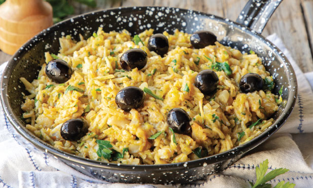

Bacalhau à Brás

Traditional Portuguese fish dish
Easy to cook, tasty and filling
Ingredients
- 200 g of salted cod
- 1 onion
- 3 garlic cloves
- 2 table spoons of olive oil
- 200 g of sliced potatoes
- Parsley
- 3 eggs
- Black olives
Steps
- Cut the potatoes into small cubes or slice them thin
- Prepare the cod by removing the skin and the bones. Separate the cod in small pieces
- Heat a pan with the olive oil
- Add the onion to the pan and let it cook until its transparent
- Add the garlic to the pan
- Add the potatoes to the pan and let them cook for 10 minutes
- Add the cod to the pan and let it cook for 10 minutes with the potatoes
- Mix the eggs in a bowl
- Check the consistency of the potatoes, if they are good to eat add the eggs to the pan and mix everything for a bit, until it's golden
- Add the parsley and mix it until everything is uniform
- Remove the pan from the heat and top the dish with some black olives